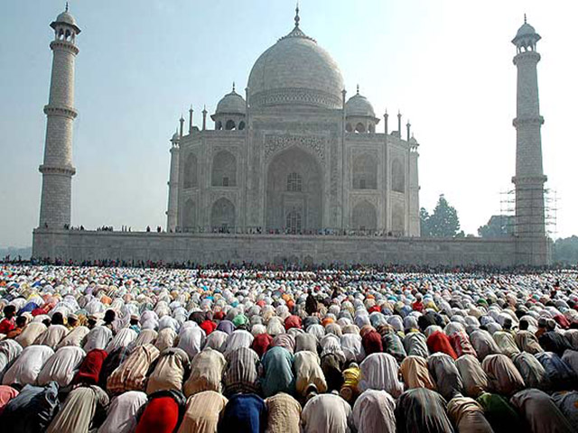

RELIGION
LA GLORIA ES DE DIOS
ICONOS INFLUYENTES
.jpg)
.jpg)
.jpg)
.jpg)
LA RELIGION
Una religión es un sistema cultural de comportamientos y prácticas, cosmovisiones, ética y organización social que relaciona la humanidad a una categoría existencial.Nota 1 Muchas religiones tienen narrativas, símbolos e historias sagradas que pretenden explicar el sentido de la vida o explicar el origen de la vida o el universo. A partir de sus creencias sobre el cosmos y la naturaleza humana, las personas pueden derivar una moral, ética o leyes religiosas o un estilo de vida preferido. Según algunas estimaciones, existen alrededor de 4200 religiones vivas en el mundo e innumerables extintas.
Muchas religiones pueden haber organizado comportamientos, clero, una definición de lo que constituye la adhesión o pertenencia, lugares santos y escrituras. La práctica de una religión puede incluir rituales, sermones, conmemoración o veneración (a una deidad, dioses o diosas), sacrificios, festivales, festines, trance, iniciaciones, oficios funerarios, oficios matrimoniales,meditación, oración, música, arte, danza, servicio comunitario u otros aspectos de la cultura humana. Las religiones pueden contener una mitología.
La palabra religión se utiliza en algunas ocasiones como sinónimo de fe, sistema de creencias o a veces un conjunto de deberes;4 sin embargo, en las palabras de Émile Durkheim, la religión difiere de la creencia privada en que se trata de «algo eminentemente social».5 Una encuesta mundial de 2012 reporta el 59 % de la población mundial como "religioso" y el 36 % como no religiosos (incluido el 13 % de ateos), con una disminución de 9 puntos porcentuales respecto a la creencia religiosa del 2005.6 En promedio, las mujeres son «más religiosas» que los hombres.7 Algunas personas siguen múltiples religiones o varios principios religiosos al mismo tiempo, independientemente de si la tradición de los principios religiosos que siguen permite el sincretismo o no.
ARTICULOS MAS COMENTADOS

Todas las religiones tienen rasgos fundamentalistas.
Mayo 06, 2017 | (15) Comentarios

Por una sociedad laica, la religión fuera de la escuela.
Mayo 08, 2018 | (13) Comentarios
- 
Los integristas islámicos prohíben gran hermano.
Junio 01, 2017 | (10) Comentarios

La apostasía, una alternativa a la secta católica.
Junio 18, 2017 | (7) Comentarios